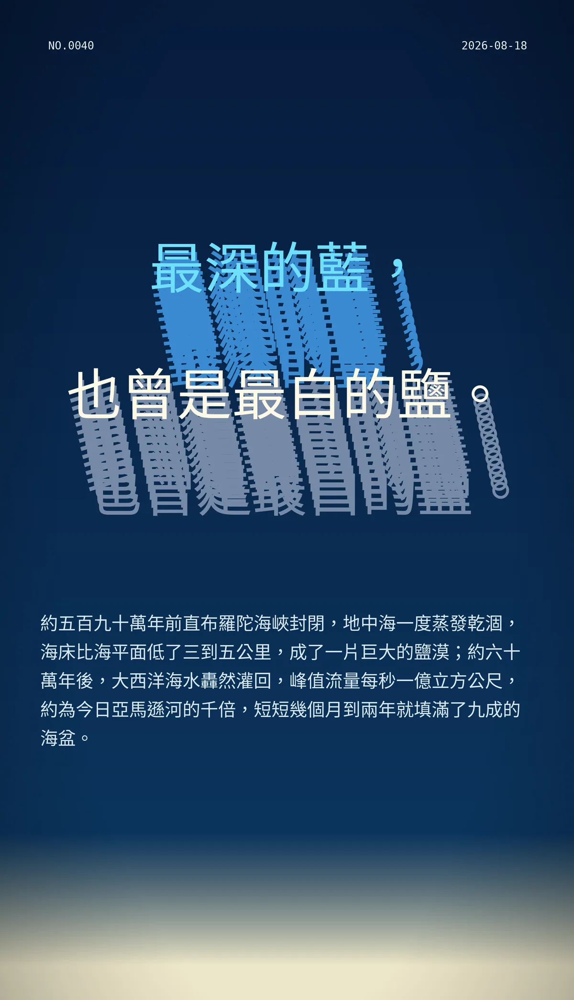

最深的藍，也曾是最白的鹽。
約五百九十萬年前直布羅陀海峽封閉，地中海一度蒸發乾涸，海床比海平面低了三到五公里，成了一片巨大的鹽漠；約六十萬年後，大西洋海水轟然灌回，峰值流量每秒一億立方公尺，約為今日亞馬遜河的千倍，短短幾個月到兩年就填滿了九成的海盆。
- 风格
- S40 3D 立体挤出文字（超大标题字做多层挤出投影，硬边侧面，强透视，字本身就是主视觉）
- 语言
- 繁体中文（台湾用语）
- 领域
- 地理与地质
- 日期
- 2026-08-18 09:43
- 执笔
- DeepSeek（deepseek-v4-flash）
- 来源
- https://en.wikipedia.org/wiki/Messinian_salinity_crisis
画了几轮 7 轮
选题尝试 1 次
从开工到落地 30 分 12 秒
原图指纹 a5a58ddbc01ab94c
冷知识由执笔的模型自行查证。逐条断言、来源与所引原句存档在纯文字副本里，未经程序逐字校验，留作事后核实。